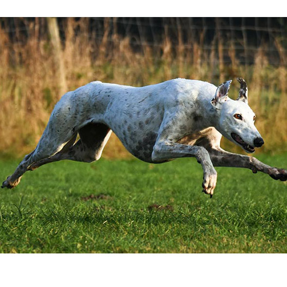

Greyhound
Đôi khi bạn muốn có một người bạn mà nằm cả ngày trên ghế và xem đi xem lại một chương trình thực tế và không một lời phàn nàn. Chú chó Greyhound là một người bạn như thế. Chúng rất bình tĩnh, dễ chịu và đáng yêu, với tốc độ chạy 40 dặm một giờ chú chó giống này vẫn có thể hài lòng khi được rúc vào lòng người chủ yêu quý của mình sau 20 phút đi dạo.

Đặc điểm
Greyhoundlà giống chó sở hữu thân hình cân đối, khỏe mạnh. Chúng có bộ lông màu từ vàng kem đến vàng nâu (màu đỏ không được công nhận). Bộ lông được cấu tạo bởi lớp lông không thấm nước bên ngoài và một lớp lông mịn dày bên trong. Chúng có cái đầu to, mõm hơi vát nhưng kèm với bộ hàm rộng và rất khỏe cùng với hàm răng sắc bén. Mũi có màu đen, mắt biểu cảm màu nâu với viền sẫm. Đôi tai cỡ nhỡ, cụp. Cổ dài, khỏe và khá cơ bắp. Ngực rộng. Đuôi dài và không bao giờ cong.
